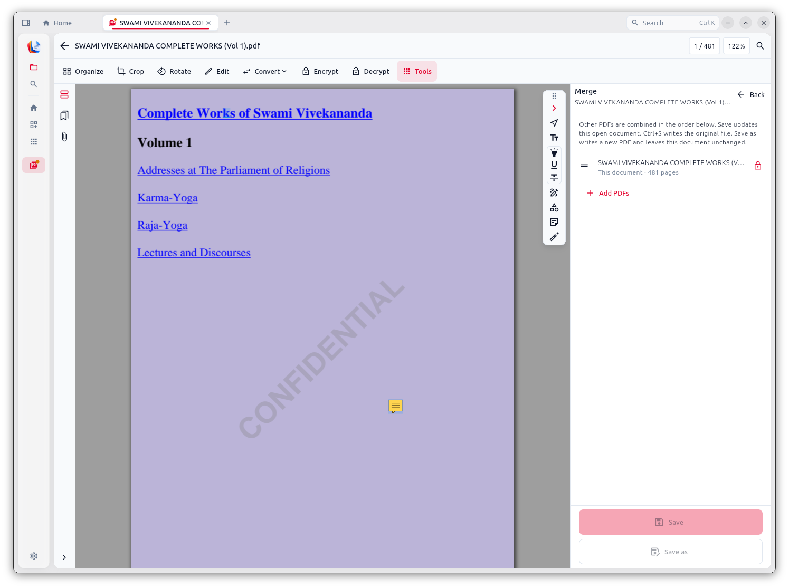
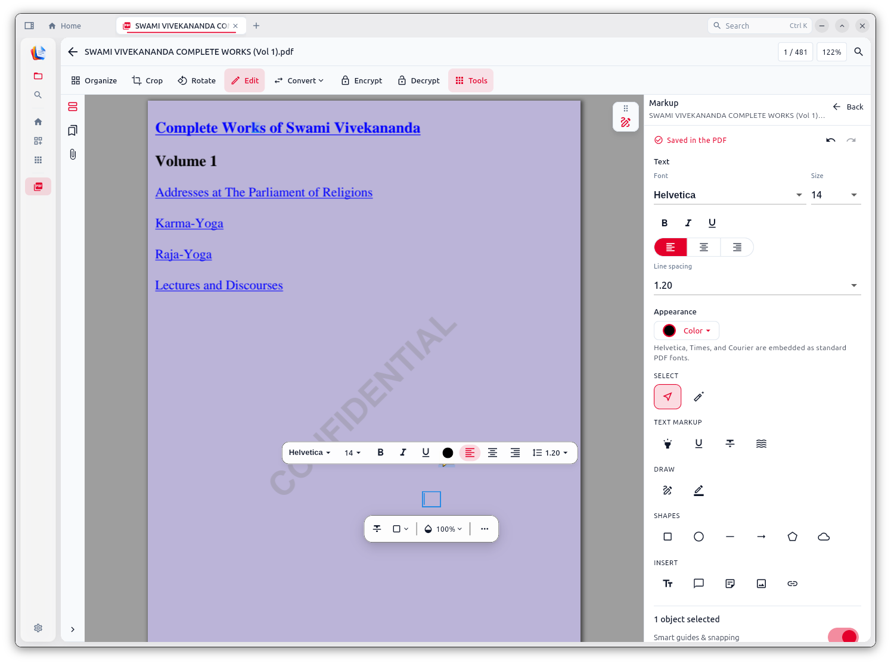

Windows
.exeSetup.exe · Start Menu · context menus
Download Setup.exe- Run the installer
- Open Document Studio from Start
v1.1.0 Offline desktop for private PDFs
Organize, encrypt, OCR, convert, mark up, and sign — all from one local desk app. Engines ship with the install. No account. No upload.
Get the app
v1.1.0 ships as a normal desktop install for Windows, macOS, and Linux. Engines the workflows need are bundled with the release so you are offline-ready after install — not after a second download wizard.
Setup.exe · Start Menu · context menus
Download Setup.exeDMG → Applications · or Homebrew
Download .dmgbrew tap tejashvi-kumawat/tap
brew install --cask document-studioDebian/Ubuntu .deb · or Homebrew
Download .debsudo apt install ./document-studio_1.1.0_amd64.debbrew tap tejashvi-kumawat/tap
brew install document-studiodocument_studio --check-update
document_studio --updateWhy offline
Most “PDF tools” ask you to upload a contract, a passport scan, or a medical form so a server can rearrange pages. Document Studio rejects that bargain. The file opens on your disk, the engines run beside it, and the result is written back beside it — nothing leaves unless you choose to share it.
01 · Architecture
The problem: browser converters and SaaS suites treat your PDF as temporary cloud inventory. That means accounts, retention policies, and a trust leap every time you need a quick merge.
What we do: Document Studio is a desktop app. Open, edit, save — all against local paths. There is no document sync backend and no “upload to process” step.
Why it matters: you can work on client packets, HR files, or personal records without inventing a second privacy story for a tool that should have been local.
02 · OCR & convert
The problem: making a scan searchable often means shipping page images to a remote OCR API. Office-to-PDF conversion usually means the same upload dance.
What we do: desktop builds bundle local engines — Tesseract for searchable PDFs and LibreOffice for Word / Excel / PowerPoint style convert — so those jobs never need a network round-trip.
Why it matters: scans and drafts stay on the machine that already holds them. Convenience stops being an excuse to exfiltrate content.
03 · Craft
The problem: one-shot web tools are fine for a single merge, then fall apart when you need organize → encrypt → sign in one sitting.
What we do: pinned files, a tools hub, page thumbnails, markup that saves into the PDF, certificate signing, watermarks, and batch ops live in one place — designed for focused desktop sessions, not tab chaos.
Why it matters: PDF work is a workflow. The UI should remember that without forcing you into a subscription suite.
04 · Open
The problem: “free” online tools monetize uploads, lock features behind accounts, or bury real redaction and permissions behind upsells.
What we do: Document Studio is free and open. No ads. No account wall. Security UX stays honest — real encryption permissions, real redaction intent, no password-cracking theater.
Why it matters: you should own the tool that opens your documents. Update when you want via installer, Homebrew, or CLI — not when a SaaS plan renews.

01 · Home

02 · Tools

03 · Organize

04 · Merge

05 · Encrypt

06 · Watermark

07 · Sign

08 · Markup
Also in the app
The filmstrip covers the tools you will show someone first. Under the hood, the same offline stack powers OCR, Office convert, forms, compare, batch jobs, and repair — documented in the feature list and how-tos.
Shrink scans and image-heavy files with quality presets before you share. Keep the packet readable without mailing a 40 MB attachment.
Local Tesseract turns page images into text you can find later. No cloud OCR API, no uploading a passport scan to make it searchable.
Desktop releases bundle LibreOffice so Word, Excel, and PowerPoint style files can become PDFs without a round-trip through a website.
Build a PDF from photos or scans, export pages to PNG/JPEG, or create a simple PDF from plain text when you need a clean one-pager.
Fill AcroForm fields and save the values into the file so recipients see completed answers, not empty blanks.
Diff text, images, and pages between two documents when you need to know what changed between draft and final.
Run one operation across many files, then edit or strip Info and XMP before a packet leaves your machine.
Remove content for real, repair broken structure when a file misbehaves, and decrypt when you know the password and need the pages unlocked.